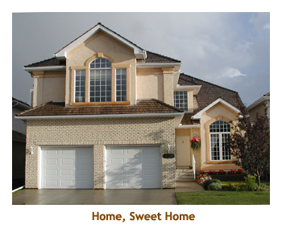

[ Home ] [ Travel ] [ Photography ] [ Pets ] [ Games] [ Rowing] [ Physics ]


Cruising on the Celebrity Eclipse
Travel
Cruises
Past Cruises (Diaries)
Future Cruises
Rogues Galleries
Land Trips
Diaries (Land Trips)
Hawai'i - Big Island - 04'01
Hawai'i - Maui - 05'02
Hawai'i - Big Island - 04'03
Hawai'i - Kaua'i - 09'04
Hawai'i - Big Island - 04'06
Hawai'i - Maui - 04'06
Mainland China - 05'07
Phoenix, Arizona - 12'07
Greek Isles - 05'08
Hawai'i - Kaua'i - 09'08
Hawai'i - Big Island - 09'09
Hawai'i - Maui - 05'12
Hawai'i - Big Island - 04'13
Ireland - 08'13
Mexico - Cancun 11'13
France/Belgium/Lux 07'15
Hawai'i - Big Island - 05'17
England / Wales - 06'17
Hawai'i - Big Island - 09'19
Photography
Cameras
Underwater
Pets
Tara
Blackie
Whitey
Muffy
Ollie
Rusty
Fluffy
Rufus&Dufus
Games
Rowing
Physics
Rating (out of 5): Ship  Food
Service
Itinerary
Food
Service
Itinerary
This was the third year in a row that we had booked this cruise. Twice before we had cancelled it due to conflicting cruises or other time constraints. However, this year was the year! The Atlantic islands had always appealed to me and in the past we had visited Madeira and two of the Canary islands. This trip added the Azores and 3 more Canary islands to our "completed" list.
We were anxious to try out the Eclipse as we had done the sister ships Solstice and Equinox on prior cruises and had really enjoyed them. We were also interested in the glass blowing shows. We were not disappointed and really loved the ship. The ship was basically full (2845 passengers, 2880 capacity). Due to sailing from Southampton to essentially British getaway islands, there were some 2300 Brits aboard. We heard rumours of about 100 Americans and 30 Canadians onboard. We met very few Americans, but we always seemed to be running into Canadians. Maybe the numbers were stated incorrectly! Of course many of the Brits were Scottish, so were concerned about the outcome of the independence vote during the cruise. All the ones we talked to were against separation (maybe a white collar crowd).
As a special bonus, we were traveling with two good friends from Calgary - Ian & Shirley - whom we had met on a transpacific cruise several years ago. I will refer to them below as I&S. The weather had been wonderful up to a week or so of sailing, but changed to a more seasonal normal of cool and rainy. Luckily, we brought umbrellas! (or bumbershoots or brollies or whatever the English call them).
Note: We have been hearing a lot recently about the clamping down on liquor brought onboard. The alcohol policies have been around for a long time, but have only been enforced sporadically. On this cruise we bought 3 bottles of wine and 6 cans of beer at 5 different ports. We did not attempt to hide or disguise the containers. Security had no interest in taking our stuff. Just saying ...
Pre-cruise (Oct 3 - 4) - Travel to Southampton
It was a nice drive to Southampton and we made the Premier Inn hotel by about 3:30, an easy walk
from the bus station. After checking in we dumped our stuff in our room and headed out to do the town. It was warm
and sunny. Our first stop was across the street at Marks & Spencer to get some snacks and drinks for the cruise.
They didn't have any Coke. We then walked through Bargate to the Tesco Express where they had very little Coke.
Back at the hotel we noticed a special dinner / breakfast package for BP 23 each, so signed up for that. It allowed us to order
anthing on the menu for dinner including drinks.
I had a prawn appetizer, a rack of ribs and a half pint of draft beer. Marjorie had a huge
hamburger. The menu cost of my meal was BP 22, so the package was a good deal. We headed out
after dinner to the nearby ASDA grocery store to get some Coke. It was dark by the time we returned to the hotel.
We were really zonked by this time and appreciated crawling into bed. It was nice to have all that flying and airport
nonsense behind us and be safe and sound in Southampton.
Day 1 (Oct 5) - Boarding at Southampton
Days 2 & 3 (Oct 6, 7) - Two days at sea
Day3 - Today we were up at 8:00. It was still cloudy, cool and bumpy,
but with a high of 16 degrees. It was warming up as we sailed south. We
had breakfast in the Elite lounge - great smoothies! It was very quiet there.
The Cruise Critic get together was at 10:15, so we missed trivia. At 11:00
there was a future cruises presentation on Europe. We had lunch at the buffet.
General trivia was at 2:00 and then we played dice and cards with I&S. It
was formal night. So we dressed up and then grabbed our usual free drinks
from the Elite lounge (beer for me, rose wine for Marjorie). I had rack
of lamb. Excellent! At 8:00 there was a port lecture on Ponta Delgada (Azores).
The fellow doing the port lectures was very good and knew the ports well, but
his lectures were short and to the point, averaging 10 to 15 minutes long.
We skipped the entertainment. Clocks went back 1 hour tonight as the
Azores are well out into the Atlantic.
Day 4 (Oct 8) - Ponta Delgada, Sao Miquel, Azores
We started off with a drive through the city and then headed west. Our first stop was at
a pair of small lakes called Lagoas das Empadadas. The lakes were surrounded by hedges
of azaleas that had long finished blooming. Apparently June and July are the times to see them
in blossom. Then we drove up the side of a crater to a lookout (Vista do Rei).
From here we could see the crater lake and the village of Sete Cidades (seven cities). The view
point was in the middle of an active clearcut operation - the fast growing pines have to be cut
on a regular basis. Then we headed to another viewpoint of the same caldera
(Miradouro Cerrado das Freiras).
After snapping a few shots we headed down into the crater to the village of Sete Cidades.
Brave people to build in a volcano crater! We had a brief stop in the village and then headed
back towards Ponta Delgada, but on a different road. Along the way we stopped at another
crater lake called Lagoa de Santiago.
After reaching Ponta Delgada, we headed northeast across the island to the town of Ribeira Grande.

|
Days 5, 6 (Oct 9, 10) - A day at sea then Madeira
Day 6 - We were up at 7:00 as we were docking in Funchal.This was our
second time in Madeira. Funchal
is the capital of Madeira which, in turn, is a province of Portugal. It was
pouring with rain, but this tapered off to occasional showers for the rest of the day.
We had breakfast at 7:30 in the buffet and then grabbed our stuff and joined our
small tour group (7 of us) for the morning. I mentioned to the driver that we wanted
to stop somewhere to get some madeira wine for the boys, so our first stop
was at Henriques & Henriques - one of the oldest wineries on the island.
They had bottles there dating back to 1854! After a tasting we got a couple of
bottles of 15 year stuff. Then it was on to the small village of Camara de Lobos.
 |
We stopped in the village and were given time to walk around the waterfront. There were lots of nicely coloured fishing boats, and we saw the place where Winston Churchhill hung out and painted. The mountain slopes were very green with plantations of bananas. Back in the van we drove up to the top of some huge sea cliffs - second in height only to the cliffs of Molokai (Hawai'i). It was very misty, so we could not see down to the ocean. (Luckily we had done this same tour a few years ago with more success). Then we stopped at a high lookout that gave a splendid view of the city of Funchal and surrounding area. Afterwards we drove up to the top of the hill where the famous toboggan run is. We didn't try it, but one couple from our group did. Instead we wandered around the hilltop and visited an old cathedral. After a thrilling ride down the hillside in twisty one way streets, we stopped at the main vegetable and fish market where we bought some local beer (Coral). We were back to the ship by 2:00. The security people ignored our two bottles of wine and beer. We had a late lunch in the buffet and then read for a while in the sun on our balcony. We won again at 4:15 trivia (more tickets!), although we didn't have Marjorie as she had gone to a special captain's sailaway on the helicopter pad. For dinner I had lamb kabobs. Yumm! Marjorie and Shirley went to the glass blowing while Ian and I played crib. Later the ladies joined us for a game of cards (we skipped the entertainment). We drank up the local beer I had bought and generally enjoyed ourselves.
Day 7 (Oct 11) - Tenerife, Canary Islands
We parked at the edge of the "old town" of La Laguna. This town is the second largest city on the island, and was the original capital city. It was mostly sunny, but the occasional light rain passed through. We walked some fairly deserted streets into the heart of the town. There we were given time to wonder around and check things out. At one end of the main street was the cathedral (Iglesia de Nuestra Senora de la Concepcion ), while the other end was the Plaza del Adelantado. We slowly cruised the street from one end to the other, popping in and out of the interesting shops along the way. One shop was a grocery store where I bought a couple of cans of local Reina beer. We met the group at the plaza and reboarded the bus. We were back to the ship about 1:00. We had no problem with security for the two cans of beer. We had lunch with I&S. In the afternoon we just read and wandered, and spent some time in the gym. It was formal night. I had a lamb shank. Very good. The entertainment was the Cirque de Soleil type show that they have on all of the Solstice class ships. Silks, slack wire, floor gymnastics, trapeze, etc. It was excellent. A good day in Tenerife!

|
|||
Day 8 (Oct 12) - Exploring Gran Canaria
Our next stop was in the suburb of Arucas to visit the large Cathedral of Arucas, also called the Church of San Juan Bautista. Our final stop was a lookout point as we entered Las Palmas. We had a good view of the city and the cruise ship, but it was somewhat cloudy. We were back to the ship by 2:00. We had a very late lunch in the buffet and then headed back ashore to do some shopping at the multi-level mall right at the end of the dock. We bought some choco milk and local Tropical beer at the HiperDino. When we came out of the mall, it was hot and sunny! Woohoo! It was nice to stroll along the dock in the sun. Two other cruise ships were in port - the Aida Stella and the Fred Olsen Braemar. Once again the security people ignored the beer. We were back on the ship in time for afternoon trivia. For dinner I had lobster ravioli. Yummy! We went to the port talk at 8:00 and then to the evening glass blowing show at 9:00. We skipped the entertainment.
 |
|||
Day 9 (Oct 13) - The moonscape of Fuerteventura
Then we drove further north to La Oliva where we toured a fortress looking building that housed Spanish troops during the 18th century. The main house (where the Colonel and family lived) has been restored and is an interesting museum. Then it was back in the bus to the north tip of the island to see the famous seaside resort and fancy hotels of the Corralejo Beach area. We stopped at the sand dunes and had a walk in the warm sun. From there we drove back to the port and were at the ship by 1:30. We had lunch in the buffet. Afterwards we read for a while and then decided to head off the ship and walk around the town. The town isn't that big (25,000 people), but there were wonderful sculptures at every major intersection or plaza. I don't think I've ever seen a town or city this densely populated with sculpture. We found a HiperDino where Marjorie bought some Chinese peanuts. We were back on the ship again by 4:00. I skipped trivia and instead went to the gym. For dinner I had prime rib. Very good. We went to the port talk at 8:00 and then skipped the entertainment to play cards with I&S. I think that Ian provided the beer tonight (Hollandia).
Day 10 (Oct 14) - Volcanos galore in Lanzarote
We traveled south to the villages of El Golfo and Los Hervideros, on the sea coast. Then we headed inland to the town of Yaiza. All the while we were driving through lava flows and scorched valleys. The village houses were white, one or two story buildings, with yards of black lava sand and the occasional cactus. From Yaiza we headed north to La Geria where we stopped at a winery (and bought a bottle!). The vinyards were amazing. The sparse vines were planted in lava gravel with rock barriers to impede the constant trade winds. I don't know how the farmers would get enough yield to make a go of it. We drove north to Mazaga and then back to Puerto del Rosario. We were back to the ship by 1:00 and cleared security fine with our bottle of wine. We had lunch in the Bistro on 5 (crepes). We read for a while and at 3:00 I did the gym. Trivia was at 4:15. For dinner I had a lamb shank. Very good. We skipped the entertainment and instead did the hot glass show. A very interesting island!
Days 11, 12 (Oct 15, 16) - Two days at sea
Day 12 - Up at 7:30 for another day at sea. It was cold and windy out on deck, and rocky, rolly all day. It was sunny in the morning and rainy by the afternoon. We had breakfast in the Elite lounge, then trivia at 10:15. I did the gym at 11:00 followed by lunch in the MDR. There was an interesting "engine room" talk at 1:15 and more trivia at 2:30. We saw a bit of the hot glass show then met with I&S at 3:15 to play Mahjong. Shirley had mentioned wanting to learn how to play Mahjong, but I think that after an afternoon of it she has been cured. For dinner I had fish & chips. There was a port talk at 8:00 then we went to see our favourite (classical) pianist, Brooks Aehron. We have seen him several times over the years and really enjoy his playing (and stories). Clocks went ahead an hour tonight.
Day 13 (Oct 17) - Return to Vigo, Spain
 We woke up at 7:00 to a warm, but rainy day. We had our breakfast in the buffet and headed off for our 8:45 tour with I&S.
We drove through the city and up a hill to the Castro Fortress (c 1655). We did a walking tour of the fortress and took
in the great views of the city. The sky was really grey for pictures, but fortunately the previous time we were here it was
hot and sunny. Then we drove south along the coast to the town of Baiona. There, we parked at the Monterreal Fortress
and did another walking tour. The first part of the walk was through the "old town" part of the town, including a lovely
cathedral. The second part of the walk was the fortress itself.
This fortress was much larger than the Castro and encircled several buildings (now
hotels, etc.). Once again the skies were grey, but that's life! We were back to the ship by 1:00. We had lunch in
the buffet and then headed across the dock to a shopping mall to look for free wireless. We were
back aboard in time for 4:15 trivia. It was formal night and we decided to try the buffet for dinner. I had a
ribeye steak. We played cards with I&S for the evening. Clocks were put back an hour tonight.
We woke up at 7:00 to a warm, but rainy day. We had our breakfast in the buffet and headed off for our 8:45 tour with I&S.
We drove through the city and up a hill to the Castro Fortress (c 1655). We did a walking tour of the fortress and took
in the great views of the city. The sky was really grey for pictures, but fortunately the previous time we were here it was
hot and sunny. Then we drove south along the coast to the town of Baiona. There, we parked at the Monterreal Fortress
and did another walking tour. The first part of the walk was through the "old town" part of the town, including a lovely
cathedral. The second part of the walk was the fortress itself.
This fortress was much larger than the Castro and encircled several buildings (now
hotels, etc.). Once again the skies were grey, but that's life! We were back to the ship by 1:00. We had lunch in
the buffet and then headed across the dock to a shopping mall to look for free wireless. We were
back aboard in time for 4:15 trivia. It was formal night and we decided to try the buffet for dinner. I had a
ribeye steak. We played cards with I&S for the evening. Clocks were put back an hour tonight.
Days 14, 15 (Oct 18, 19) - A day at sea, then back home
 Day 15 - We were up at 6:30 to see that we had already docked at Southampton. We had breakfast in the buffet. Our exit time was 8:20. We dragged our carry-ons off the ship and found our luggage in the terminal. Then it was British Customs and then a short walk to the National Express station. The bus was on time and we were at Heathrow by about 12:30. Our flight (Heathrow to Vancouver) was at least an hour delayed in taking off due to baggage loading issues, so were arrived late into Vancouver and missed our 6:30 PM connecting flight to Calgary. We were rescheduled to a 9:30 flight, arriving at midnight in YYC. So, we emailed Chrissy to cancel them picking us up and instead used a cab. We were home by about 1:00 AM. All was well and the kitties were glad to see us. Nice to be home after a great cruise.